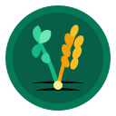

Çiftlik Modülünüzü Seçin
%100 Çevrimdışı • Tamamen Bağımsız • Açık Kaynak
Yem & Rasyon
Rasyon Rehberi
Uluslararası standartlarda (NASEM / NRC / CNCPS) TMR vagon hesabı, tek tıkla en düşük maliyetli otomatik yem dengeleme ve asidoz uyarısı.
NASEM / NRC / CNCPS
Otomatik Dengeleyici
TMR Vagon Kantarı
Başlat

Yem Bitkileri
Yetiştiricilik & Silaj
Yonca, korunga, silajlık mısır, fiğ ve karışımların ekim-gübreleme normları, silaj nem testi ve tarla ekiliş defteri.
Yonca & Korunga
Silaj Nem Testi
Tohum & Gübre Hesabı
Başlat
Üretim & Döl Verimi
Üretim Rehberi
283 günlük inek ve 150 günlük koyun gebelik/doğum çarkı, sabah-akşam tohumlama saati ve ilk damızlık ağırlık hesabı.
283 Gün İnek Çarkı
150 Gün Koç Katımı
Tohumlama Saati
Başlat
Çoban Doktor
Hızlı Ön Teşhis & Küpe Defteri
Sığır ve koyun için karar ağaçlı saha ön teşhisi, rektal derece kontrolü, ilaç arınma süresi (süt/et) geri sayımı ve hayati acil ilk yardım müdahaleleri.
Saha Karar Ağacı
Derece Kontrolü
İlaç Arınma Sayacı
Başlat